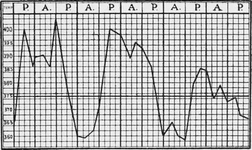
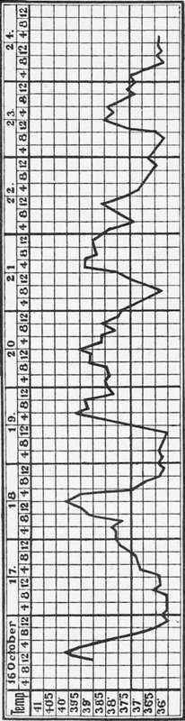
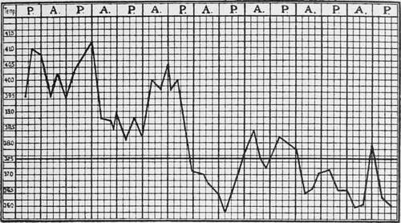
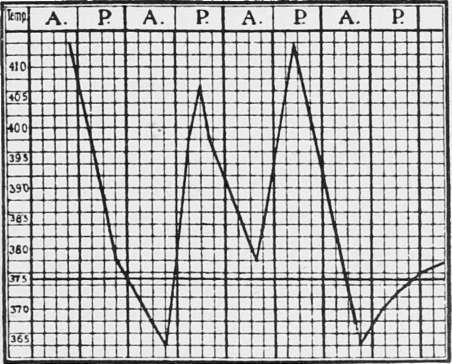
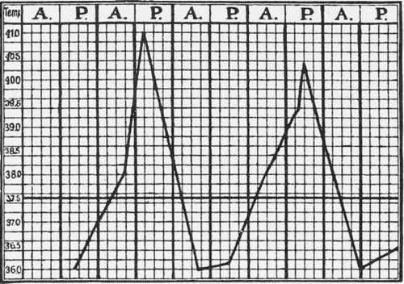
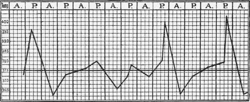

Malignant Tertian
Description
This section is from the book "Malaria, Influenza And Dengue", by Julius Mennaberg and O. Leichtenstern. Also available from Amazon: Malaria, influenza and dengue.
Malignant Tertian
The occurrence of a tertian type in severe fevers of a pernicious character was known even to Celsus. In Lib. iii, Cap. iii, of his works he writes: "Tertianarum vero duo genera sunt. Alterum eodem modo, quo quartana, et incipiens, et clesinens; illo tantum interposito disci imine, quod unum diem praestat integrum, tertium redit. Alterum longe perniciosus, quod tertio quidem die revertitur, ex octo autem et quadraginta horis fere sex et triginta per acces sionem occupat (interdum etiam vel minus, vel plus) neque ex toto in remissione desisit, set tantum levius est. It genus plerique medici appellant."*
* In another place (Cap. iii) Celsus writes: " At ubi id genus tertianse est, quod TJULTptTaiov medici appellant, magna cura opus est, ne id fallat. Habet enim plerumque frequentiores accessiones decessionesque, ut aliud morbi genus videri possit; porrigiturque febris in horas viginti quatuor, et triginta sex; ut, quod idem est, non idem esse videatur."
In later times Ludovicus Mercatus, Physician in Ordinary to Philip II, described especially well "tertiana perniciosa"; he says: "Estitaque perniciosa tertiana febris qutedam, qua?, simulata ter tiani circuitus, effigie, lethalis et mille accidentibus periculosissimis implicata existit." Torti writesf: "Primo necat hominem perniciosa intermittens, potissimum tertiana." Morton, too, was acquainted with the perniciousness of tertian fevers, and this knowledge was preserved, though only by a few writers. Riehl, for instance, while discussing the epidemic of comatose malaria of the year 1730, described by Werlhof,-and called at that time "deadly fever,"-mentions that the type of this pernicious fever was usually tertian. Josephus Frank likewise asserts that pernicious fever has usually a tertian or quotidian type.
It was only very recently that Marchiafava and Bignami called attention to the almost forgotten malignant tertian fever, and by careful investigation determined it to be the principal one of pernicious fevers. Independently and almost simultaneously with these investigators the author recognized the existence of a tertian fever that was produced by the crescent forming parasites.
Fig. 30.-Malignant Tertian (after Marchiafava and Bignami).
The most striking characteristic of this fever was mentioned by Celsus in the previously quoted short remarks. This consists in the long duration of the paroxysms, which usually lasts thirty six hours or over. On account of this the period of apyrexia is very short, and usually not at all sufficient for the recuperation of the patient, who, even during this short interval, is, as a rule, considerably prostrated.
A large number of these cases show a characteristic curve, which has been accurately described by Marchiafava and Bignami, and which I can confirm from my own experience. The peculiarities of this curve (Fig. 30) consist in the following: The temperature rises quickly, frequently without a chill; it remains, with only slight fluctuations, for several hours at this height, and falls at the middle of the paroxysm, but usually not to normal (pseudocrisis); soon after, sometimes accompanied by a chill, there is a new rise, frequently higher than the first, and after remaining a while at this height, it finally defer vesces. According to Marchiafava and Bignami, we may differentiate in this curve a rise, a pseudocrisis, a precritical elevation, and a crisis. Nevertheless this curve is not absolutely characteristic of this fever, for, on the one hand, there are a number of malignant tertian fevers which show quite a different temperature movement (Figs. 32, 34); on the other, it occasionally happens in ordinary tertian that the paroxysm lasts for thirty six hours (Figs. 25, 28), and that the curve shows a pseudocritical decline. Still, what is in one case an exception is in the other a frequent occurrence, or even the rule, and, everything considered, the length of the paroxysm may be designated the principal characteristic of malignant tertian fever.
It is evident that this fever can and should be called "tertian," since the beginnings of the two paroxysms are forty eight hours apart. In Italy authoritative voices have been raised against this designation-for instance, that of Baccelli. Instead of malignant tertian, the name biduous was suggested, on account of the fever extending over two days. Even though we must confess that this designation has some justification, is easy to handle, and would prevent misunderstandings, there are still better reasons for the preservation of the historic name, brought recently again into prominence by Marchiafava and Bignami. These reasons are based principally on the fact that all malarial fevers are named according to the duration of development of the parasites causing them.
Fig.- 31- Malignant tertian.
Deviations from the typical curve described frequently occur, so that it is often difficult to find the basic type or even an approach to it. Marchiafava and Bignami mention the following abnormalities as frequent: The rise occurs not suddenly, but gradually; the pseudocrisis does not make a remission, but an intermission, so that two paroxysms completely separated seem to have taken place; the duration of the paroxysm increases under marked fluctuations of the temperature; the precritical elevation fails to occur. In the paroxysms as they follow one another we may find the following deviations: Anticipation, postponement, prolongation of the paroxysm with shortening of the apyrexia, light fever movements during the time when there should be apyrexia, and doubling of the paroxysms (tertiana maligna duplex).
Fig. 32.-Malignant Tertian Beginning with Continued Fever (after Marchiafava and Bignami).
Fig. 33.-Malignant Tertian.
Fig. 34.-Malignant Tertian.
Fig. 35.-Irregular Fever with Predominating Tertian Type. On the first two days a few ameboid parasites, later only crescents.
All these exceptions illustrate the difficulties which we meet when analyzing the curves of malignant fever. How these irregularities are produced has been described in another place.
Continue to:
- prev: Type Of Fever
- Table of Contents
- next: The Ordinary Symptoms Of The Fevers Caused By The Crescent-Forming Parasites
Tags
mosquito, malaria, influenza, dengue, symptoms, outbreaks, diseases, hemoglobinuria, infections